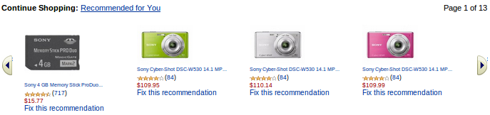
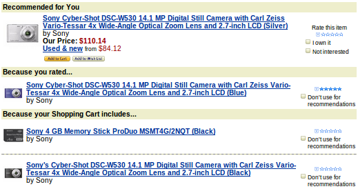

推荐¶
导入已有的数据¶
一些电子商务网站可能已经有了用户、商品和订单的数据。这些已有的数据可以以SCD文件的形式被加载到我们的推荐系统。 在SCD文件被放到它们所对应的路径里之后，必须要调用index() API来将它们加载入推荐系统。
用户和商品¶
每当用户和商品数据有任何变化，你需要调用下面的API。这些数据在SF1中被存储为文档。文档API中的DOCID就是推荐API中的ITEMID。
| Table | Add | Update | Remove | Get |
|---|---|---|---|---|
| user | add_user | update_user | remove_user | get_user |
| item = doc | create | update | destroy | get |
用户行为¶
各种用户行为被用来帮助我们的系统为每个用户推荐个性化的结果。
购物篮¶
每当一个用户的购物篮被改变了，例如
- 用户在购物篮里添加或者删除了某商品。
- 用户的购物篮因为订单提交了而变为空。
在上述的情况下，需要调用update_shopping_cart API。
这被用于BOS和BOE推荐类型。
用户偏好¶
每当用户对某商品表示了偏好，需要调用track_event API。
这被用于BOE推荐类型。
在collection配置文件中，你可以添加任何偏好类型到<RecommendBundle><Schema><Track>。 比如，以下是config/example.xml中配置的4种偏好类型。
- wish_list：用户他的wish list添加了一个商品
- own：用户已经拥有了某商品
- like：用户喜欢某个商品
- favorite：用户把某个商品加入到“最爱”中。
以下事件类型是默认支持的，它们被用来剔除商品：
- not_rec_result：用户对某商品不感兴趣，所以我们的推荐系统将不会对此用户推荐这件商品。
- not_rec_input：用户不想让某件商品被用来向他做推荐，所以我们的推荐系统将不会在对此用户推荐的决策中使用这件商品。
评价商品¶
每当用户对一个商品评分，需要调用rate_item API。
这被用于BOE推荐类型。
评分分为1、2、3、4、5五个等级。他们的意义如下：
- 1、我讨厌它
- 2、我不喜欢它
- 3、它还可以
- 4、我喜欢它
- 5、我爱死它了
推荐API图文介绍¶
通过使用我们的推荐API，可以实时的上传数据并且获得推荐结果，相应的API接口参看 推荐引擎API
do_recommend API支持7种推荐类型。你可能已经在一些电子商务网站使用过它们，如Amazon.
VAV(Viewed Also View)¶
它给出了通常用户看了输入商品时还看了哪些商品。
BOE(Based On Event)¶
它根据除了查看商品外的用户行为给出推荐的商品，因为查看商品的行为专门用于BOB推荐类型。
例如：
在上面的例子中，有一个名为”Fix this recommendation”的链接，它链向类似如下的内容：
它给出了系统推荐这些商品的原因。do_recommend API也返回了包含reasons的结果。
基于这些原因，用户可以给出更多的偏好和评分来改善推荐系统。
TIB(Top Item Bundle)¶
top_item_bundle API是第7种推荐类型。 它给出了在一个订单里，哪些商品被购买得最频繁，也即最畅销的商品系列。
配置文件¶
在config/sf1config.xml中，可以配置如下选项：
- CollectionDataDirectory配置推荐数据的路径。
- CronPara配置推荐任务的定时执行。
- 在CacheSize中， 为了针对do_recommend() API获得更好的性能，可以为以下cache配置更大的容量： purchase配置购买矩阵的cache容量，在rec_type是BAB，BOE，BOB和BOS时使用； visit配置访问矩阵的cache容量，在rec_type是VAV时使用； index配置索引缓冲的容量，在rec_type是FBT时使用。
下面是一个默认的配置，你可以根据自己的需求修改：
<RecommendBundle>
<Parameter>
<CollectionDataDirectory>default-recommend-dir</CollectionDataDirectory>
<CronPara value="0 0 * * *" />
<!-- 1G for purchase matrix, 512M for visit matrix, 10M for index buffer -->
<CacheSize purchase="1073741824" visit="536870912" index="10485760" />
<FreqItemSet enable="no" minfreq="10" />
</Parameter>
</RecommendBundle>
在collection配置文件中，比如config/example.xml，可以配置以下选项：
- DocumentSchema配置商品的属性。DOCID属性在所有的推荐API中被称为ITEMID。
- User配置用户的属性。
- Track配置用户事件的属性，用于track_event()和do_recommend() API。
下面是一个默认的配置，你可以根据自己的需求修改：
<DocumentSchema>
<Property name="DOCID" type="string"/>
<Property name="DATE" type="string"/>
<Property name="Title" type="string"/>
<Property name="Content" type="string"/>
<Property name="URL" type="string"/>
</DocumentSchema>
<RecommendBundle>
<Schema>
<User>
<Property name="gender" />
<Property name="age" />
<Property name="area" />
</User>
<Track>
<Event name="wish_list" />
<Event name="own" />
<Event name="like" />
<Event name="favorite" />
</Track>
</Schema>
</RecommendBundle>
SCD格式¶
有3种SCD类型：index，user，order 在SCD文件被放到它们对应的目录下之后，你需要调用index() API去把它们加载入SF1系统。
index SCD¶
- index SCD不仅用于推荐任务中的item数据，也用于SF1中的搜索和数据挖掘任务。
- 它包含商品的数据。
- DOCID域对于每个商品项都是必需的，它就是order SCD和所有推荐API中的ITEMID。
目录：collection/example/scd/index
例如：
<DOCID>item_001
<Title>iphone
<Content>digital device
<URL>www.shop.com/product/item_001
user SCD¶
它包含用户的配置数据。USERID对于每个用户都是必需的。
目录：collection/example/scd/recommend/user
例如：
<USERID>user_001
<gender>male
<age>23
<area>Beijing
order SCD¶
- 它包含购买的数据。
- USERID和ITEMID对于每个记录都是必需的。
- ORDERID代表订单id。如果缺省，这条记录将被视为一条新的记录。
- 如果多个记录的ORDERID是一致的，那么这些记录将被合并视为一个订单。
- DATE域的格式是”YYYY-mm-dd”。如果缺省，当前的时间将会被使用。
目录：collection/example/scd/recommend/order
例如：
<USERID>user_001
<ITEMID>item_001
<ORDERID>order_001
<DATE>2011-04-11
<price>3000
<quantity>1
分布式部署¶
可以将SF1服务部署在多台机器上，以下是最经常使用的用例。
一台机器上¶
以下是默认的配置，只有一台机器运行搜索和推荐服务。
在example.xml中：
<Collection ...>
<DocumentSchema> ...
<IndexBundle> ...
<MiningBundle> ...
<RecommendBundle>...
</Collection>
在sf1config.xml中：
<SF1Config ...>
<Deployment>...
<DistributedTopology enable="n" type="search" ...>
<DistributedTopology enable="n" type="recommend" ...>
</Deployment>
</SF1Config>
搜索和推荐主控在同一台机器上¶
以下是一个在A机器上运行搜索服务，在A和B上运行推荐服务的例子，
- A机器作为单个的搜索节点
- A机器作为推荐主控和1号worker
- B机器作为推荐2号worker
A机器上的example.xml：
<Collection ...>
<DocumentSchema> ...
<IndexBundle> ...
<MiningBundle> ...
<RecommendBundle>...
</Collection>
A机器上的sf1config.xml:
<SF1Config ...>
<Deployment>
...
<DistributedCommon clusterid="cluster_001" ... />
<DistributedTopology enable="n" type="search" nodenum="2">
<CurrentSf1rNode nodeid="1" replicaid="1">
<MasterServer enable="y" name="undefined" shardnum="2">
<Collection name="example" distributive="y"/>
</MasterServer>
<WorkerServer enable="y" shardid="1">
<Collection name="example"/>
</WorkerServer>
</CurrentSf1rNode>
</DistributedTopology>
<DistributedTopology enable="y" type="recommend" nodenum="2">
<CurrentSf1rNode nodeid="1" replicaid="1">
<MasterServer enable="y" name="undefined" shardnum="2">
<Collection name="example" distributive="y" shardids="1,2"/>
</MasterServer>
<WorkerServer enable="y" shardid="1">
<Collection name="example"/>
</WorkerServer>
</CurrentSf1rNode>
</DistributedTopology>
...
</Deployment>
</SF1Config>
B机器上的example.xml:
<Collection ...>
<DocumentSchema> ...
<RecommendBundle>...
</Collection>
B机器上的sf1config.xml:
<SF1Config ...>
<Deployment>
...
<DistributedCommon clusterid="cluster_001" ... />
<DistributedTopology enable="n" type="search" nodenum="2">
<CurrentSf1rNode nodeid="1" replicaid="1">
<MasterServer enable="y" name="undefined" shardnum="2">
<Collection name="example" distributive="y"/>
</MasterServer>
<WorkerServer enable="y" shardid="1">
<Collection name="example"/>
</WorkerServer>
</CurrentSf1rNode>
</DistributedTopology>
<DistributedTopology enable="y" type="recommend" nodenum="2">
<CurrentSf1rNode nodeid="2" replicaid="1">
<MasterServer enable="n" name="undefined" shardnum="2">
<Collection name="example" distributive="y" shardids="1,2"/>
</MasterServer>
<WorkerServer enable="y" shardid="2">
<Collection name="example"/>
</WorkerServer>
</CurrentSf1rNode>
</DistributedTopology>
...
</Deployment>
</SF1Config>
搜索和推荐主控在不同的机器上¶
以下是一个在A机器上运行搜索服务，在B和C上运行推荐服务的例子，
- A机器作为搜索主控和worker
- B机器作为推荐主控和1号worker
- C机器作为推荐2号worker
A机器上的example.xml：
<Collection ...>
<DocumentSchema> ...
<IndexBundle> ...
<MiningBundle> ...
</Collection>
A机器上的sf1config.xml:
<SF1Config ...>
<Deployment>
...
<DistributedCommon clusterid="cluster_001" ... />
<DistributedTopology enable="y" type="search" nodenum="2">
<CurrentSf1rNode nodeid="1" replicaid="1">
<MasterServer enable="y" name="undefined" shardnum="2">
<Collection name="example" distributive="y"/>
</MasterServer>
<WorkerServer enable="y" shardid="1">
<Collection name="example"/>
</WorkerServer>
</CurrentSf1rNode>
</DistributedTopology>
<DistributedTopology enable="n" type="recommend" nodenum="2">
...
</DistributedTopology>
...
</Deployment>
</SF1Config>
B机器上的example.xml:
<Collection ...>
<DocumentSchema> ...
<RecommendBundle> ...
</Collection>
B机器上的sf1config.xml:
<SF1Config ...>
<Deployment>
...
<DistributedCommon clusterid="cluster_001" ... />
<DistributedTopology enable="n" type="search" nodenum="2">
...
</DistributedTopology>
<DistributedTopology enable="y" type="recommend" nodenum="2">
<CurrentSf1rNode nodeid="1" replicaid="1">
<MasterServer enable="y" name="undefined" shardnum="2">
<Collection name="example" distributive="y" shardids="1,2"/>
</MasterServer>
<WorkerServer enable="y" shardid="1">
<Collection name="example"/>
</WorkerServer>
</CurrentSf1rNode>
</DistributedTopology>
...
</Deployment>
</SF1Config>
C机器上的example.xml:
<Collection ...>
<DocumentSchema> ...
<RecommendBundle> ...
</Collection>
C机器上的sf1config.xml:
<SF1Config ...>
<Deployment>
...
<DistributedCommon clusterid="cluster_001" ... />
<DistributedTopology enable="n" type="search" nodenum="2">
...
</DistributedTopology>
<DistributedTopology enable="y" type="recommend" nodenum="2">
<CurrentSf1rNode nodeid="1" replicaid="1">
<MasterServer enable="n" name="undefined" shardnum="2">
<Collection name="example" distributive="y" shardids="1,2"/>
</MasterServer>
<WorkerServer enable="y" shardid="2">
<Collection name="example"/>
</WorkerServer>
</CurrentSf1rNode>
</DistributedTopology>
...
</Deployment>
</SF1Config>